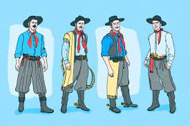

Gaúcho Tradicional
O Gaúcho em seu traje típico usa. Usa bombacha, que são calções largos apertados acima dos tornozelos por meio de botões, um lenço amarrado ao pescoço, um poncho franjado volteando-lhe o ombro e no cinturão largo de couro com bolsos (guaiaca), guarda dinheiro, armas, etc. Suas botas têm esporas e seu chapéu é de abas largas sendo preso ao queixo por um laço de couro, o barbicacho. Para laçar animais em campo aberto, mais especificamente o gado, usa o laço ou a boleadeira que é constituía de três esferas de pedra ou de ferro, forradas de couro e ligadas entre si por meio de cordas de couro.